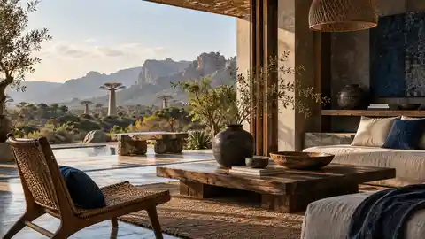

Objets de maison
Matières brutes et formes essentielles.
Objets · Matières · Gestes · Territoires
Une maison pour découvrir des objets malgaches à travers ce qui leur donne du sens.

La Maison Malgache relie chaque pièce à quatre fils simples : l’objet, la matière, le geste et le territoire.
Découvrir la MaisonLa pièce comme point d’entrée.
Texture, usage et présence.
La main qui transforme.
Le lieu qui relie l’ensemble.
Trois portes d’entrée pour découvrir la Maison sans réduire Madagascar à un style unique.
Fibres, bois, terre, textile. Derrière chaque matière se trouvent des techniques et des usages qui donnent à l’objet sa singularité.
Voir les savoir-faire
Un aperçu éditorial où l’image porte la sensation de matière avant l’information commerciale.
Matières brutes et formes essentielles.

Le tressage comme langage de forme.

Faire entrer la matière dans le quotidien.

Les matières, les techniques et les objets prennent sens dans des lieux. La Maison veut rendre ces liens visibles.
Continuer le voyageDes histoires courtes pour regarder les objets autrement.
 Territoires
TerritoiresComprendre la matière avant de regarder l’objet fini.
Le savoir-faire comme continuité plutôt que comme décor.
Choisir moins de pièces et mieux comprendre chacune d’elles.